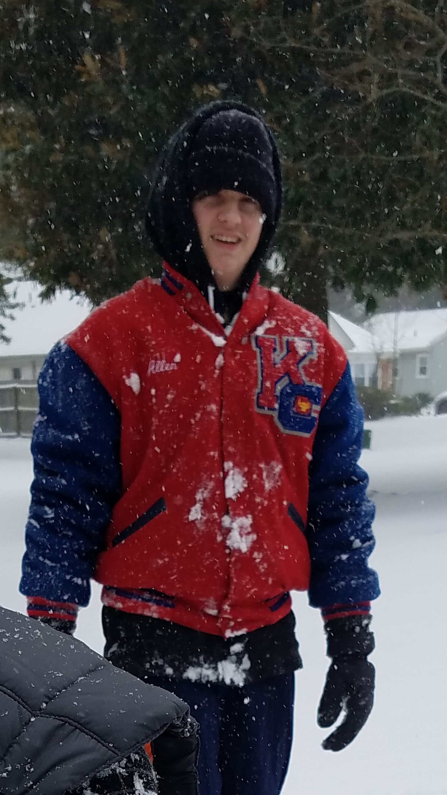
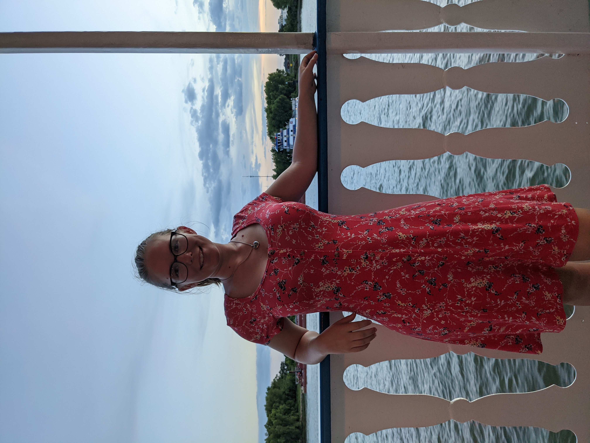
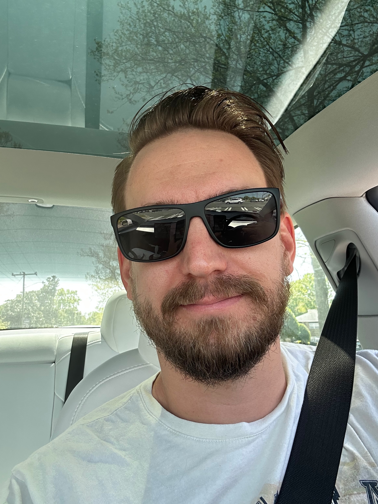
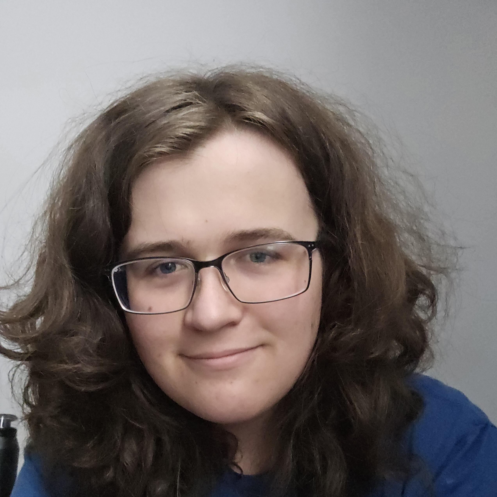
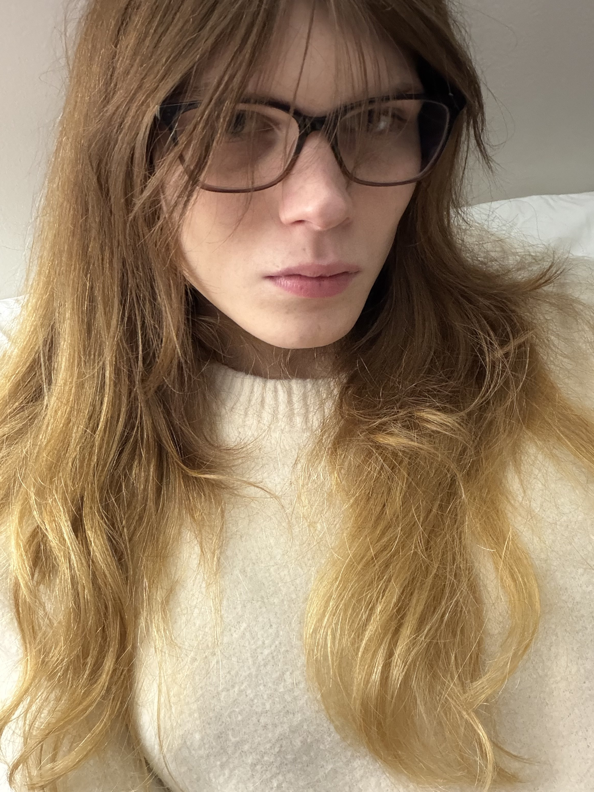
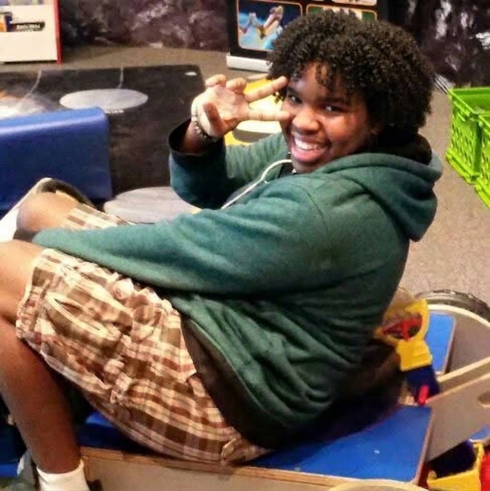
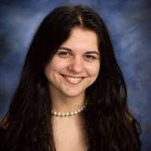

Matthew is a senior at Old Dominion University with a double major in Computer Science and Teaching. He is passionate about Gold Star because he believes it could keep track of his home, work, and school responsibilites while making a difference to everyone who wishes to improve routine building. In his free time, he loves playing video games and cooking. He is also a freelance Math tutor!

Maggie is currently double majoring in Physics and Computer Science at Old Dominion University, where she is a senior. Diagnosed with ADHD as an adult, she is passionate about Gold Star because she has struggled with creating and maintaining routines throughout her entire life. She spends her free time reading and trying her hand at various sewing and crocheting projects.

Jeffrey Bucher is currently a senior at Old Dominion University with a major in Computer Science and a minor in Data Science. He is passionate about Gold Star because he always has a ton of things he needs to do for work, school and at home. Currently he uses his NotePad on his phone to keep track of what he needs to do, and building this application will help him and his wife have an easier time tracking their daily tasks. In their free time they enjoy working on his own personal projects and being outside.



Miguel Looney is a senior at ODU pursuing a degree in Computer Science with a minor in Cybersecurity. He is passionate about Gold Star because he believes technology should be designed to help people overcome everyday challenges and be accessible to individuals with diverse needs and abilities. He enjoys creating solutions that make digital tools more inclusive and supportive for those who are often overlooked during the design process. Outside of academics, Miguel enjoys drawing, cooking/baking, gaming, and exploring new technology as a whole.

Lydia Nebuchadnezzar is a Computer Science student at Old Dominion University. She is passtionate to work on Gold Star because she juggles school, work and home and loves a challenge that improves her life and others. In her free time Lydia enjoys making creative projects.